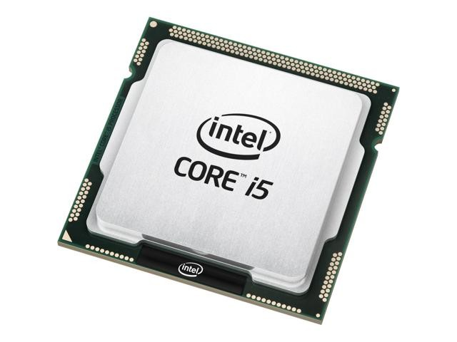

Processeur
Le processeur est probablement le composant le plus important que vous devrez choisir pour votre machine. La mémoire et le stockage alimentent le processeur, qui contrôle tous les transferts de données qui ont lieu dans le PC. Lorsque vous cherchez quel processeur choisir, portez votre attention sur sa fréquence (exprimée en gigahertz, ou GHz). Plus cette valeur est élevée, plus le processeur sera rapide. Cette caractéristique est importante si vous comptez overclocker votre ordinateur, car sa fréquence augmentera. Par définition, l’overclocking consiste à accélérer les cycles d’horloge du processeur afin qu’il traite les données plus rapidement. Vous devrez donc vous orienter vers un dispositif de dissipation thermique adapté pour que les hautes températures du processeur n’aient pas d’impact négatif sur la santé de votre système. Le processeur doit être compatible avec la carte mère que vous avez choisie.
